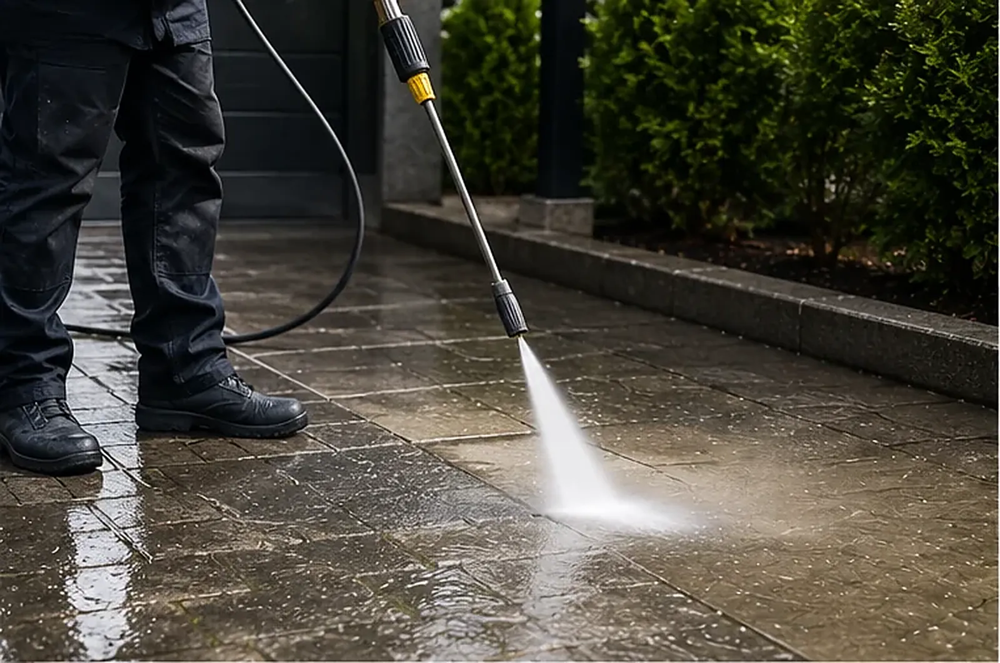
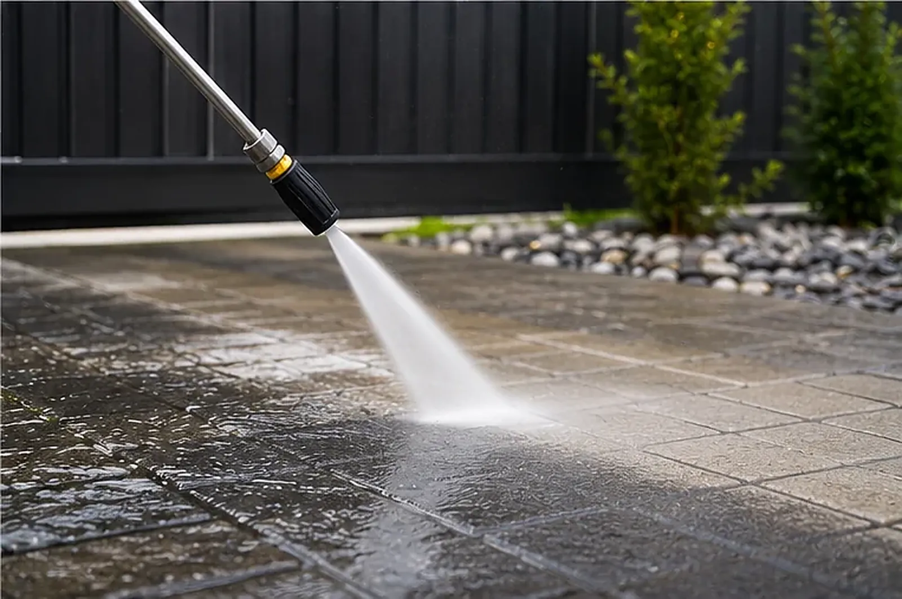

Hochdruckreinigung
Kraft, die man sieht. Präzision, die man nicht sieht.
Jahrelang angesetzter Schmutz, Algen und Reifenspuren verschwinden in einem Arbeitsgang – mit Profigeräten und dem richtigen Druck für jede Oberfläche.


Scroll-Effekt: Design-Animation, kein dokumentiertes Kundenprojekt
Einsatzbereiche
Wenn Schmutz tiefer sitzt.
Pflaster, Beton, Naturstein oder Asphalt: Wir stellen Druck, Düse und Wassertemperatur auf den Untergrund ein – wählen Sie eine Fläche.

Wege und Vorgärten reinigen wir mit dem Flächenreiniger – gleichmäßig, spritzarm und ohne Streifenbildung. Grünbelag verschwindet, die Trittsicherheit kommt zurück.
Arbeitsweise
Druck, Düse, Temperatur – die drei Stellschrauben.
Profigeräte unterscheiden sich von Baumarkt-Reinigern weniger durch „mehr Druck“ als durch Kontrolle: Ölige Verschmutzungen brauchen heißes Wasser, Grünbelag eher Fläche und Geduld, ein empfindlicher Sockel einen weichen Fächerstrahl.
Und ehrlich gesagt: Hochdruck ist nicht immer die Antwort. Weiche Fugen, sandgestrahlte Oberflächen oder alte Holzterrassen können unter zu viel Druck leiden. Dann arbeiten wir mit reduziertem Druck, größerem Abstand – oder empfehlen ein anderes Verfahren, auch wenn das für uns der kleinere Auftrag ist.
- Heiß- und Kaltwasser-Hochdruck je nach Verschmutzung
- Fugen auf Wunsch nachsanden, Flächen imprägnieren
- Wasseranschluss genügt – alles andere bringen wir mit


Häufige Fragen
Bevor der Strahl angeht.
Die Fragen, die uns vor Hochdruck-Einsätzen am häufigsten gestellt werden – kurz beantwortet.
Welche Flächen können mit Hochdruck gereinigt werden?
Pflaster, Betonflächen, viele Natursteine, Asphalt, Metall und robuste Fassaden. Bei empfindlichen Oberflächen wie weichem Putz oder Holz entscheiden wir nach einer Probefläche, ob Hochdruck oder ein schonenderes Verfahren das bessere Ergebnis liefert.
Werden die Fugen dabei beschädigt?
Sandfugen können bei falscher Technik ausgespült werden – deshalb arbeiten wir dort mit Flächenreiniger und angepasstem Druck. Auf Wunsch sanden wir die Fugen nach der Reinigung neu ein, damit die Fläche dauerhaft stabil bleibt.
Was brauchen Sie von mir vor Ort?
Einen Wasseranschluss und Zugang zur Fläche – mehr in der Regel nicht. Strom bringen wir bei Bedarf über eigene Geräte mit. Alles Weitere klären wir bei der Terminvereinbarung.
Zu welcher Jahreszeit ist die Reinigung sinnvoll?
Bei frostfreiem Wetter praktisch immer. Besonders gefragt sind Frühjahr und Herbst – rutschige Grünbeläge sind auch ein Sicherheitsthema, nicht nur Optik.
Zeigen Sie uns Ihre Fläche.
Ein Foto und die ungefähren Quadratmeter genügen – Sie erhalten kurzfristig eine ehrliche Einschätzung samt Preis.